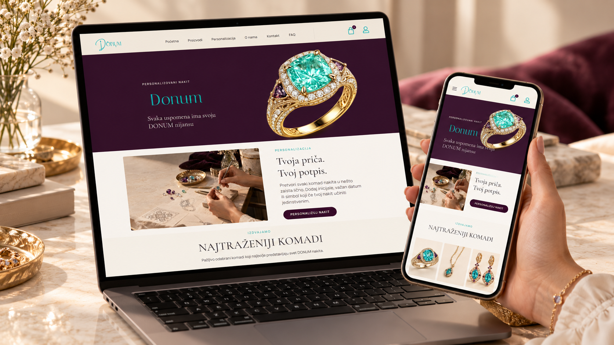
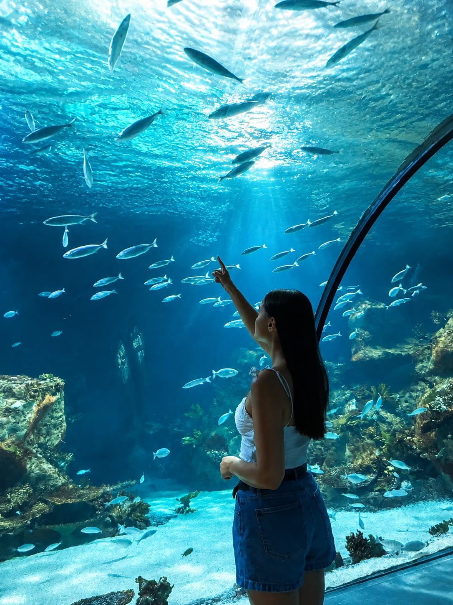
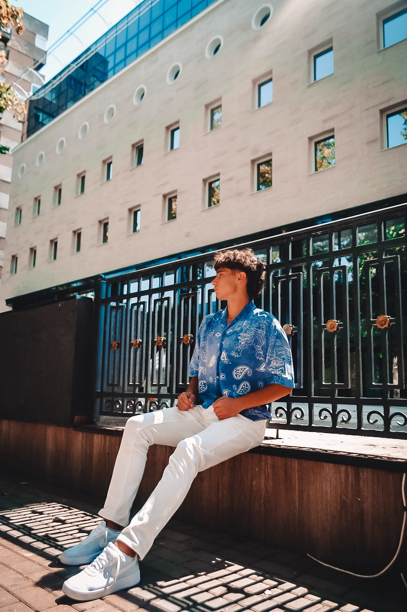
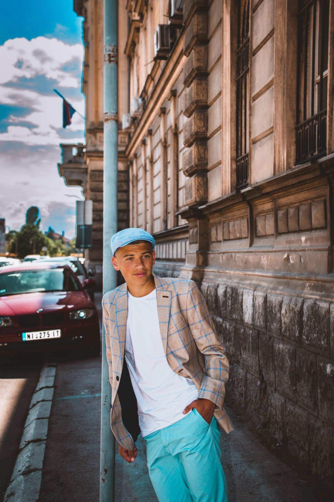
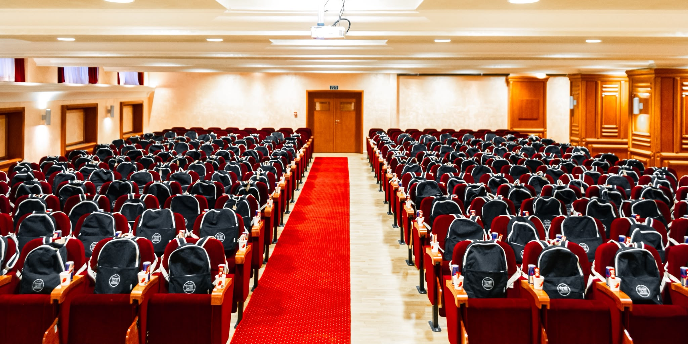
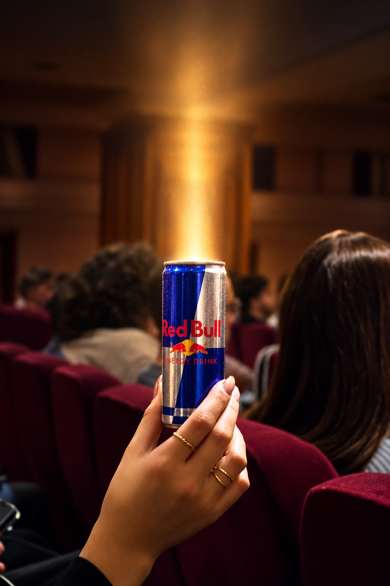
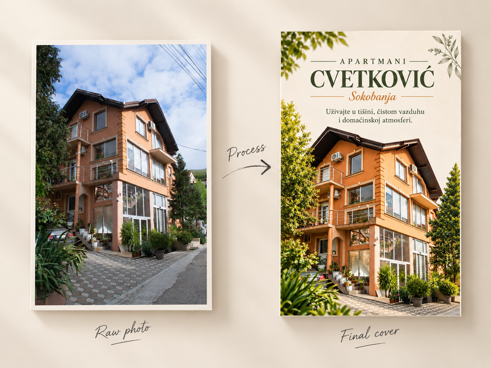
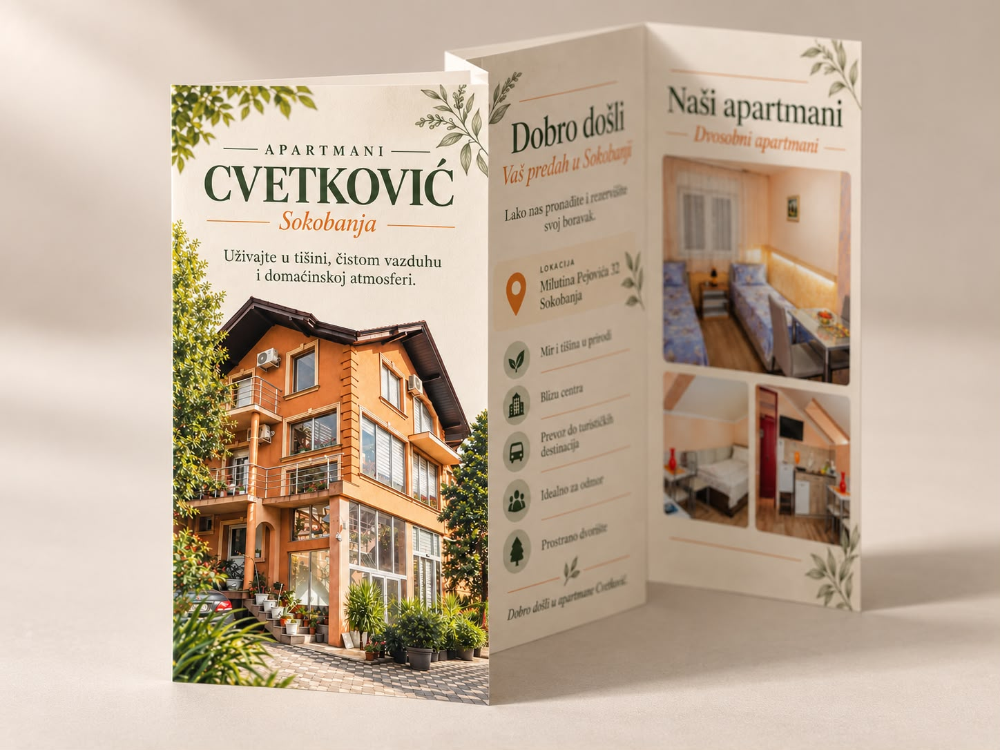
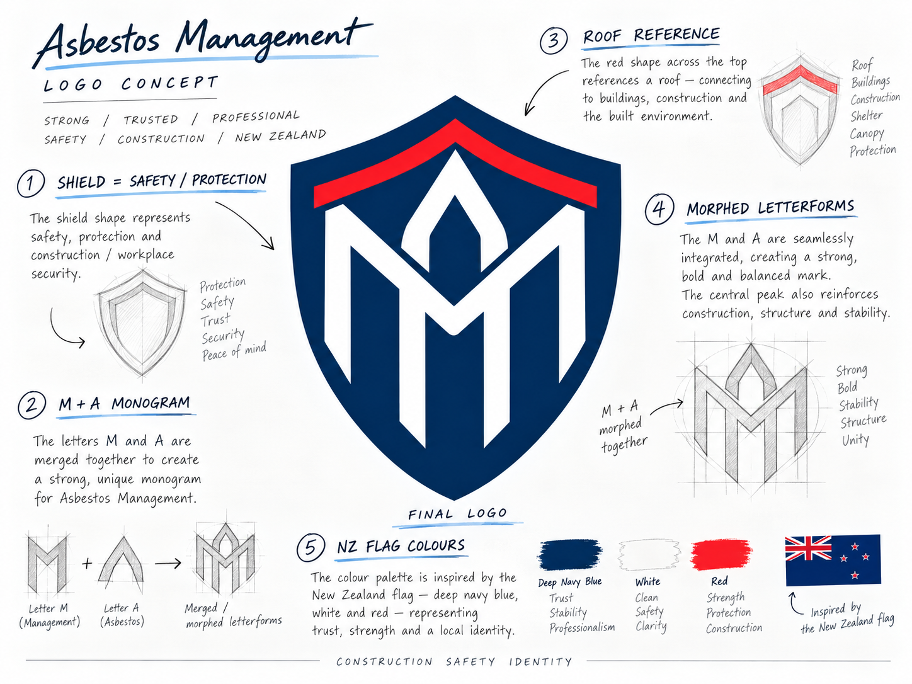

DONUMBrand / Digital
Web Designer & Developer
I design and build thoughtful digital experiences with a focus on expressive interfaces, clear interaction and the details that make a product feel distinct.
Available for selected collaborations



01
A collection of digital experiences, identities and visual explorations.
01
A refined digital home for meaningful gifting, shaped by a quietly luxurious visual system.
02
An atmospheric web experience balancing experimental visuals with an effortless user journey.
View Live Site ↗
03
A destination-first redesign that turns discovery into an immersive, useful planning experience.
 View Project ↗
View Project ↗
04
A flexible learning platform designed to make complex educational content feel approachable.
 View Live Site ↗
View Live Site ↗
02
I turn ideas into visual systems and digital products that feel intentional, human and memorable.
I’m a web designer and developer with a strong focus on frontend, UI/UX and visual design. I enjoy moving between concept, interface and code—giving every part of a project the same level of care.
My technical foundation also extends to backend development and databases, helping me design with the full product in mind and collaborate naturally across disciplines.
Let’s work together03
From first sketch to final release.
01
02
03
04
04
A curated selection of image-making, print, identity and campaign work.
01
Selected edits showing colour, light and detail refinement.

01 / Aquarium
Color & Light

02 / Portrait
Color Grading

03 / Portrait
Light & Detail
Photoshop · Lightroom · Color grading · Retouching
02
Selected commissions and personal studies across people, spaces and promotional storytelling.


03
Layout, typography and visual systems designed to translate confidently from screen to print.


04
A brand identity redesign for a New Zealand safety company, translating protection, structure and local identity into a stronger and more distinctive mark.

Before
Original Logo
Previous Brand Mark
After
Redesigned Logo
New Visual Direction
05
Have a project in mind?